Parkplatz: Largo Giustiniano — 3 €/Tag, Kreditkarte, 2 Gehminuten zu den ersten beiden Stationen.
Tickets: 4-Stätten-Pass (12,50 €) deckt Galla Placidia, San Vitale, Sant'Apollinare Nuovo und das Baptisterium Neoniano ab. Online buchen auf ravennamosaici.it — im Sommer schnell ausgebucht.
Zeitslot-Pflicht: Für Galla Placidia und San Vitale Zeitslot bei der Buchung wählen. Galla Placidia hat sehr begrenzte Kapazität — frühzeitig buchen.
Öffnungszeiten (8. März – 2. November): täglich 9:00–19:00 Uhr, letzter Einlass 18:30 Uhr. Kleidung: bedeckte Schultern und Knie in allen Stationen.
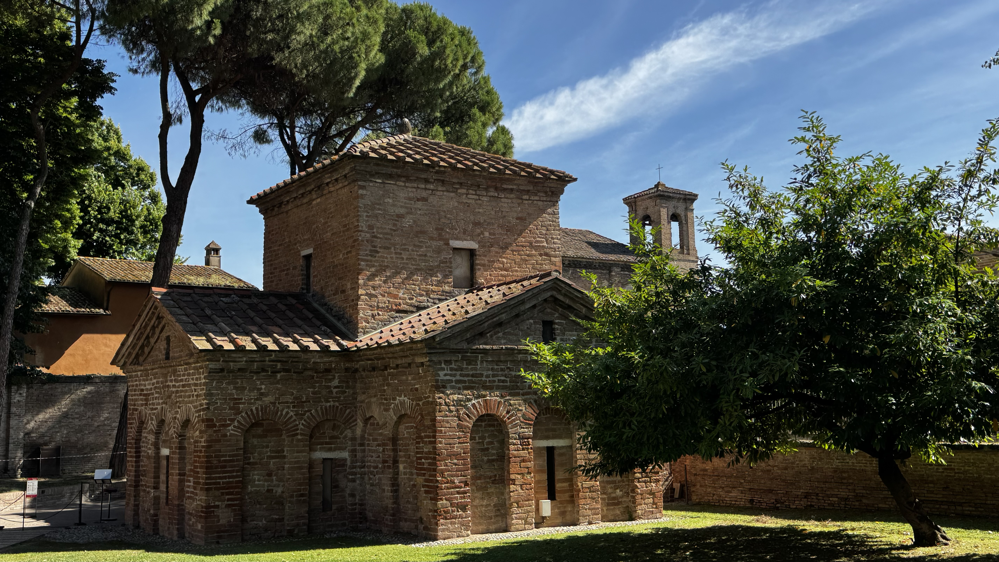
Das Mausoleum von außen — schlichter Backsteinbau in Kreuzform, 5. Jh. n. Chr. Der Glockenturm im Hintergrund gehört zu San Vitale.
Von außen ein schlichter roter Backsteinbau, kreuzförmig, keine zwanzig Meter lang — kein Hinweis auf das, was innen wartet. Der Übergang vom grellen Tageslicht in die Halbdunkelheit des Inneren ist bewusst inszeniert. Die Augen brauchen einen Moment. Dann beginnen die Mosaiken zu leuchten.
Wer hat es gebaut? Galla Placidia — Tochter Kaiser Theodosius' I., Halbschwester des schwachen Honorius, der Ravenna zur Kaiserresidenz gemacht hatte. Sie wurde als Kind von den Westgoten als Geisel genommen, heiratete deren König Ataulf, wurde zurückgegeben, wieder verheiratet, Regentin für ihren minderjährigen Sohn Valentinian III. Von hier aus regierte sie das sterbende Westreich über 20 Jahre lang. Das Mausoleum ließ sie um 426 n. Chr. für sich errichten — die drei Marmorsarkophage im Inneren sind leer.
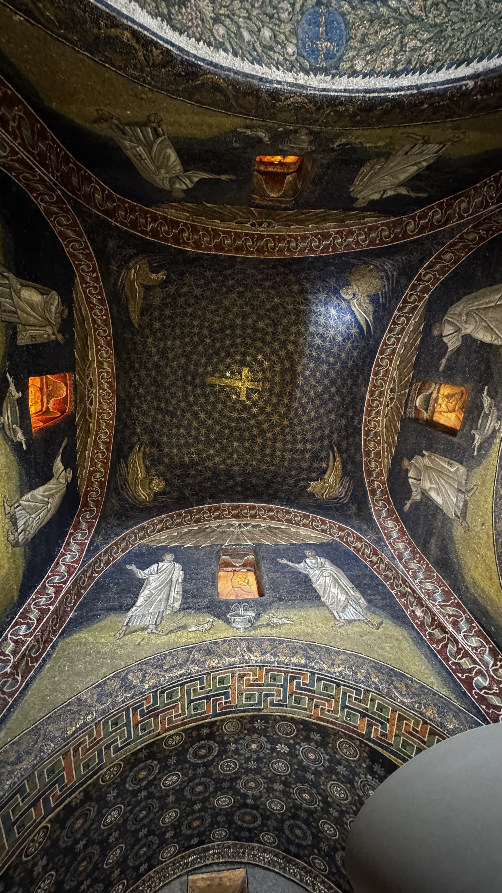
Das Kreuzgewölbe — goldenes Kreuz im Sternenhimmel, die vier Evangelistensymbole in den Zwickeln, darunter die Lünette mit dem heiligen Laurentius.
Die Kuppel: Ein tiefdunkles Blau, darin über 800 Goldsterne in asymmetrischer Anordnung — und ein großes goldenes Kreuz im Zentrum. Die Asymmetrie ist Absicht: Wer sich unter dem Gewölbe dreht, hat das Gefühl, die Sterne würden sich mitbewegen. Byzantinische Mosaizisten platzierten die Sterne so, dass durch veränderte Blickwinkel ein Rotationseffekt entsteht.
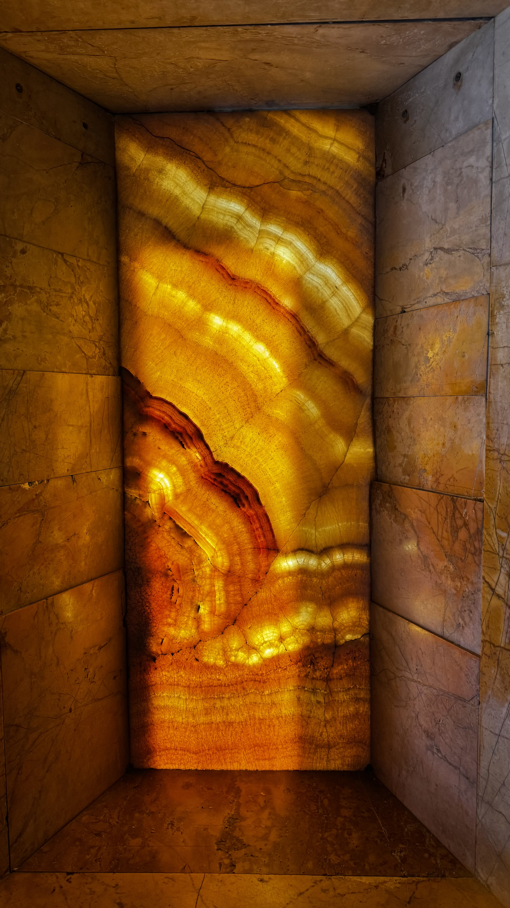
Eines der Alabasterfenster von innen — kein Glas, sondern hauchdünner Alabaster der das Tageslicht in warmes Gold verwandelt. Dieses Foto trifft den Effekt besser als jede Beschreibung.
Die Bildprogramme: Im Lünettenbogen über dem Eingang steht Christus als Guter Hirte — jugendlich, bartlos, in der Ikonographie der Antike, nicht des Mittelalters. Eine der frühesten bekannten Darstellungen dieses Motivs. Die Evangelistensymbole in den Zwickeln — Löwe, Stier, Adler, Engel — rahmen das Kreuz im Gewölbe.
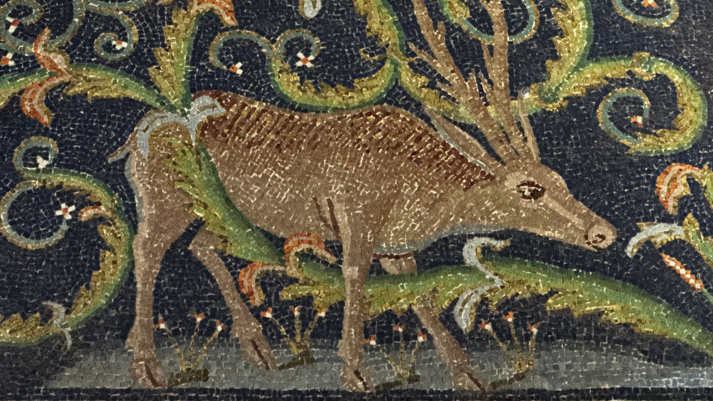
Hirsch im Paradiesgarten — Lünettenmosaik. Psalm 42: »Wie der Hirsch lechzt nach frischem Wasser, so lechzt meine Seele nach dir, o Gott.«
Die Hirsche an der Quelle in den Lünetten sind kein dekoratives Motiv — sie sind direkter Verweis auf Psalm 42, eines der ältesten christlichen Sehnsuchtsmotive. Die Pfauen auf anderen Bögen stammen aus der römischen Antike: Das Fleisch des Pfaus galt als unverweslich — Unsterblichkeitssymbol, nahtlos in die christliche Bildsprache übernommen.
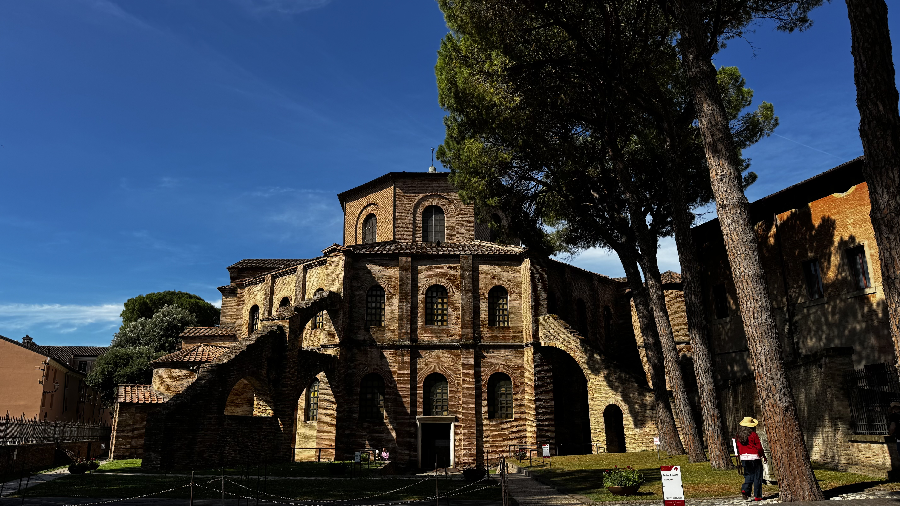
San Vitale im Morgenlicht — der oktogonale Zentralbau, umgeben von Pinien. Die frühen Stunden sind die besten: wenige Besucher, ideales Licht im Inneren.
Direkt nebenan — kein Fußweg. San Vitale ist das kunsthistorisch bedeutendste Gebäude Ravennas und eines der wenigen vollständig erhaltenen Kirchengebäude aus der Zeit Justinians des Großen weltweit. Der Bau begann 526 n. Chr. unter ostgotischer, also arianischer Herrschaft — finanziert vom Bankier Julius Argentarius — und wurde 547/548 n. Chr. unter byzantinischer Herrschaft fertiggestellt.
Architektur: San Vitale ist ein Zentralbau — ein achteckiger Grundriss mit zwei Stockwerken von Galerien, gewölbten Nischen und einem tiefen Presbyterium. Ungewöhnlich für westliche Kirchen, verbreitet im byzantinischen Osten. Die Wände lösen sich optisch auf, Licht bricht von allen Seiten, der Blick wird ständig umgeleitet.
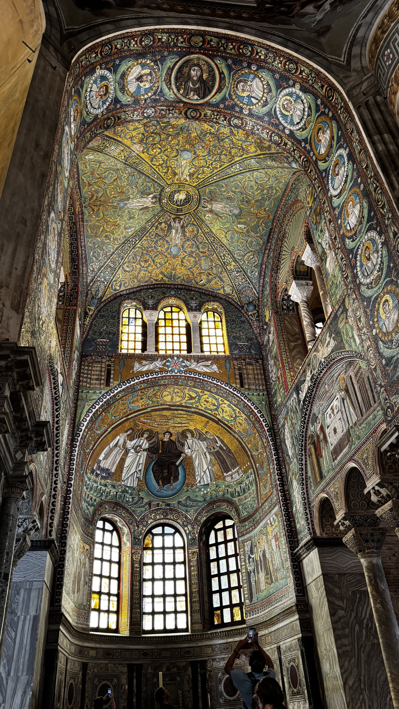
Der Chorraum von unten — Apsiskalotte, Gewölbe, Bögen und Seitenwände in einem Blick. Die Dichte des Bildprogramms erschlägt beim ersten Anblick.
Zwei Christusbilder — eine Theologie-Geschichte in einem Raum
San Vitale zeigt etwas das man so nirgendwo sonst sieht: zwei gegensätzliche Christusikonographien, wenige Meter voneinander entfernt — sichtbarer Abdruck des Übergangs zwischen zwei Epochen und zwei Theologien.
Die Apsiskalotte (das Halbkuppelgewölbe direkt über dem Altar): Christus thronend auf der blauen Weltkugel — bartlos, jugendlich. Das ist arianische Ikonographie aus der Gründungszeit des Baus. Die Arianer lehrten, Christus sei vom Vater geschaffen und ihm untergeordnet — kein Pantokrator, sondern ein Erhöhter. Der bartlose, menschlich-jugendliche Christus trägt diese Handschrift.
Der Apsisbogen (der Triumphbogen davor, aus der byzantinischen Fertigstellungsphase): Christus bärtig — der orthodoxe Pantokrator, wesensgleich mit dem Vater, allmächtig. Derselbe Raum, dieselbe Sichtachse, entgegengesetzte Theologie. Ein eingefrorener Moment des Übergangs.
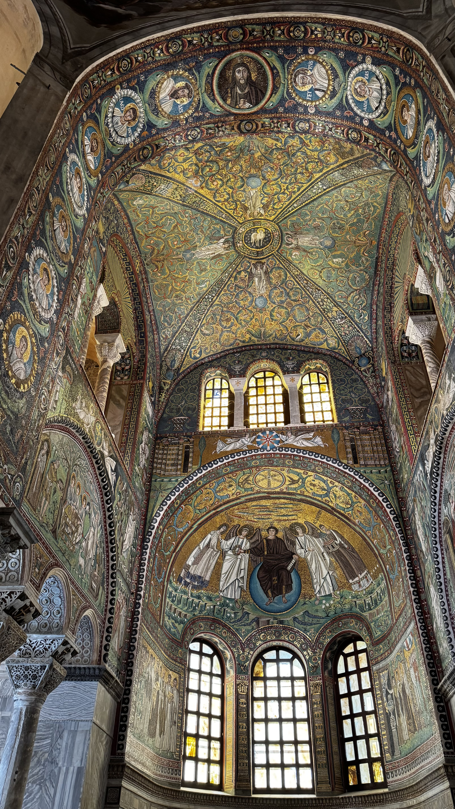
Der Chorraum von oben — das Gewölbe mit dem Agnus Dei im Zentrum, umgeben von Ranken, Tieren und Engeln. Das Lamm Gottes war im 6. Jh. noch die häufigste Christusdarstellung.
Das theologische Bildprogramm: Die Seitenwände des Chors zeigen alttestamentliche Opferszenen — Abraham mit Isaak, Melchisedek mit Brot und Wein, Abel mit dem Lamm. Das ist kein dekorativer Rückblick, sondern ein theologisches Argument: Alle drei präfigurieren die Eucharistie. Das Opfer am Altar darunter ist ihre Erfüllung. Wer das las — und die Bischöfe und Hofleute die hier saßen lasen es — sah keine Dekoration, sondern eine Heilsgeschichte in drei Akten.
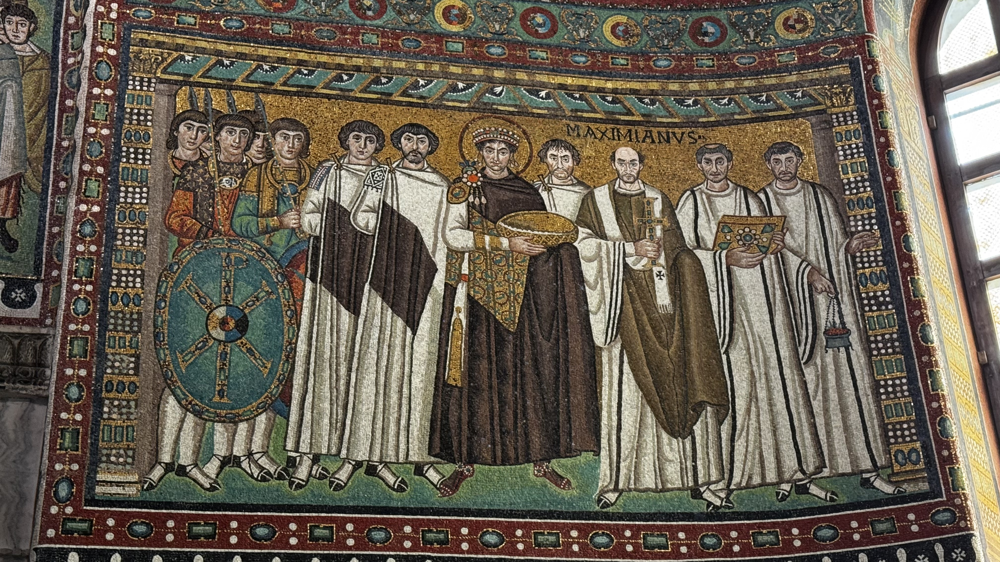
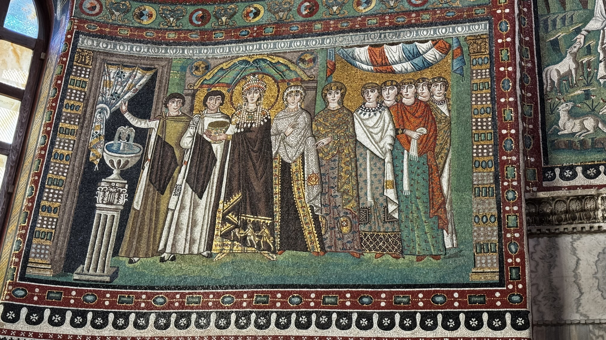
Links: Justinian mit Hofstaat und Bischof Maximianus (einziger namentlich eingeschriebener). Rechts: Theodora mit Kelch und Hofdamen — beide nie in Ravenna, beide hier in Gold verewigt.
Das Justinian-Mosaik (linke Apsisseite): Der Kaiser in kaiserlichem Purpur mit Goldnimbus — kein Heiliger, aber göttlich konnotiert — hält die Patene mit dem eucharistischen Brot. Neben ihm Bischof Maximian, dessen Name als einziger eingeschrieben ist. Die Figuren überlappen sich leicht — ein früher Versuch, Tiefe darzustellen. Jedes Detail Propaganda: der Kaiser als Verbinder von weltlicher und kirchlicher Macht.
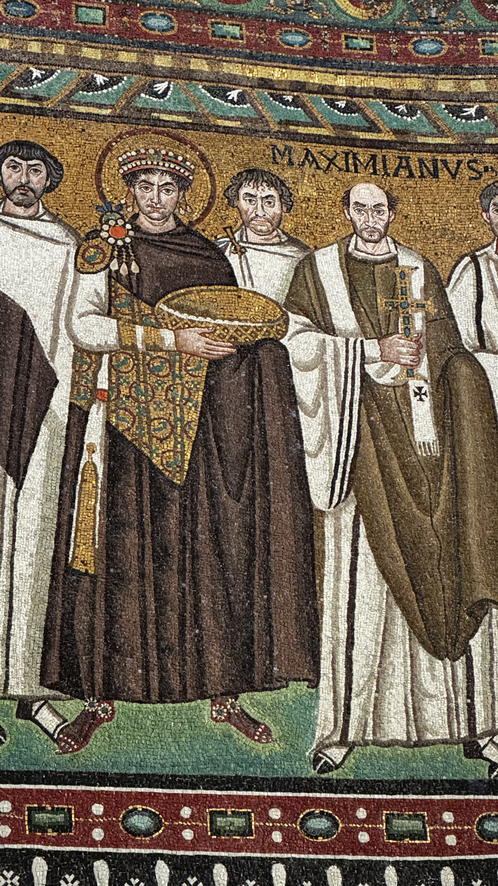
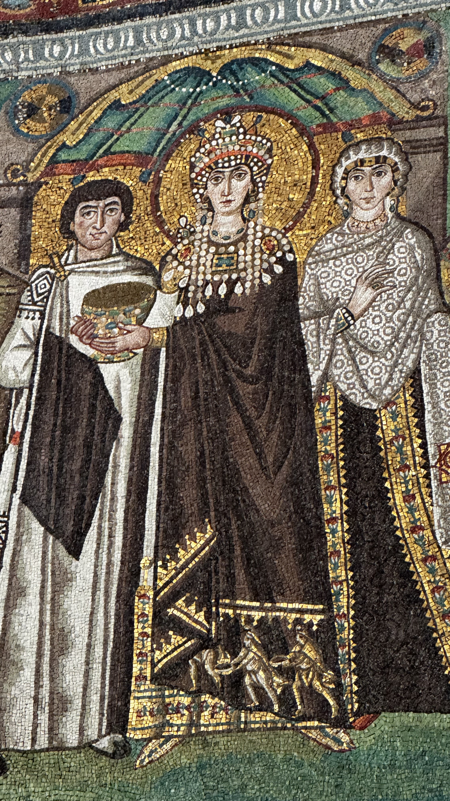
Detail Justinian mit Goldnimbus und Patene. Detail Theodora — die aufwendige Perlenkrone, der Halsschmuck, der Purpurmantel dessen Saum die Drei Weisen Könige zeigt.
Das Theodora-Mosaik (rechte Apsisseite): Die Kaiserin mit dem Kelch — der eucharistische Pendant zum Brot Justinians. Der Saum ihres Mantels zeigt die Drei Weisen Könige mit Gaben — Theodora bringt den Kelch: eine Kette von Gaben, vom Morgenland bis zum Altarraum. Theodora war Tochter eines Zirkuswärters, möglicherweise Schauspielerin, bevor sie Justinian heiratete und Mitkaiserin mit vollem Titel wurde. Eines der bedeutendsten Frauenportraits der Spätantike.
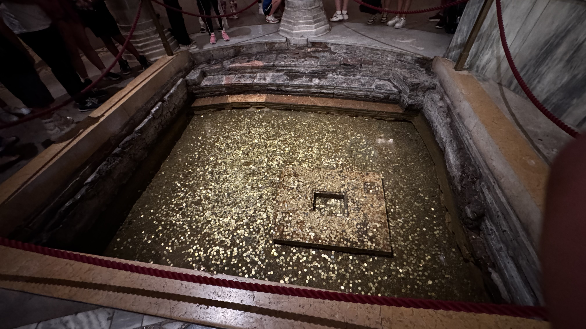
Das originale frühchristliche Taufbecken, im Boden eingelassen — die Stufen führen hinunter, die zentrale Plattform markierte den Standort des Täuflings. Erwachsenentaufe durch Untertauchen war die ursprüngliche Praxis der frühen Kirche.
Das Taufbecken: Im Boden des Kirchenschiffs eingelassen, quadratisch, mit einer zentralen Plattform und hinabführenden Stufen. Die Immersionstaufe — vollständiges Untertauchen — war in der Frühkirche die Norm. Der Täufling stieg hinein, wurde dreimal untergetaucht im Namen der Dreifaltigkeit, stieg auf der anderen Seite heraus: symbolisch als neuer Mensch. Dass das Becken direkt in den Kirchenraum integriert ist — ungewöhnlich, normalerweise war die Taufe räumlich getrennt in eigenen Baptisterien. Die Münzen darin sind natürlich moderner Touristenzusatz.
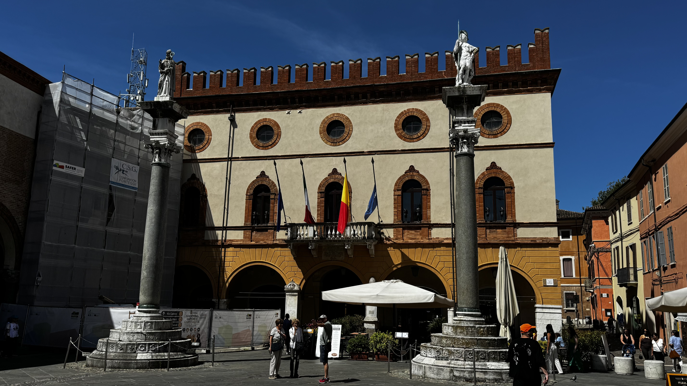
Piazza del Popolo mit dem Palazzo del Comune — die zwei venezianischen Säulen tragen die Stadtpatrone Apollinaris (links) und Vitale (rechts). Die Zinnenkrone des Palazzo verweist auf mittelalterliche Stadtmacht.
Die schönste Piazza Ravennas. Die zwei Granitsäulen mit den Stadtpatronen San Vitale und San Apollinare wurden 1483 von Venedig gestiftet, als Ravenna unter venezianische Herrschaft kam — ein Machtsymbol als steinernes Geschenk. Der Palazzo del Comune dahinter ist mittelalterlich, mehrfach umgebaut, heute Rathaus.
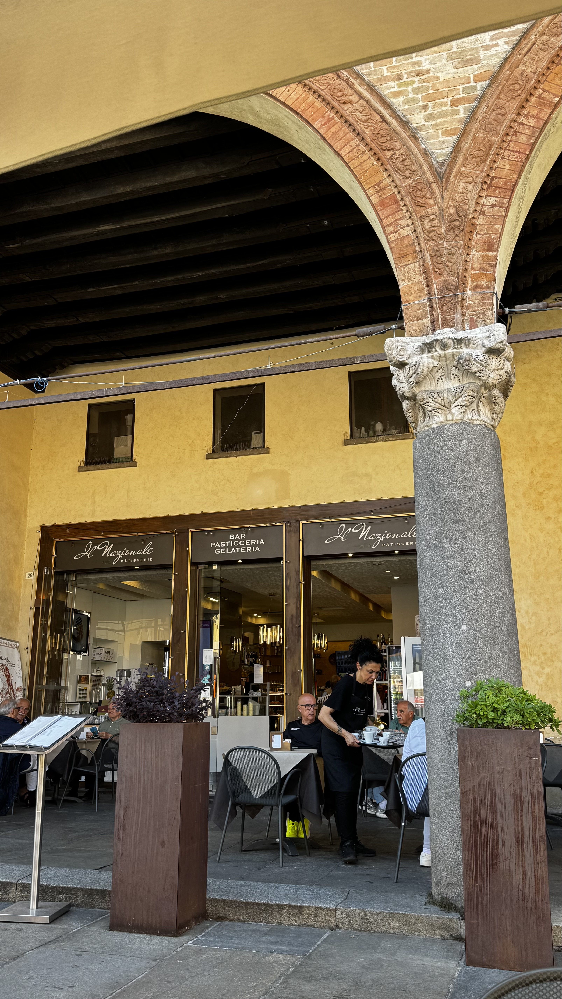
Bar Il Nazionale unter den Arkaden — hier war die Kaffeepause. Das gotische Kapitell der Arkadenbögen ist sichtbar: mittelalterliche Struktur, modernes Café.
Die Bar Il Nazionale unter den Arkaden ist eine der besten Adressen für den Vormittagsespresso — Pasticceria, Gelateria, Außenbestuhlung. Kurz durchatmen, bevor es weitergeht.
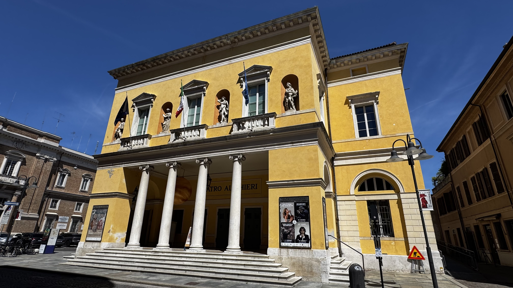
Teatro Alighieri auf dem Weg zu Sant'Apollinare Nuovo — die Plakate zeigen Riccardo Muti und das Ravenna Festival. Das neoklassizistische Opernhaus wurde 1852 eingeweiht.
Auf dem Weg zur dritten Station kommt man am Teatro Alighieri vorbei — Ravennas Opernhaus, 1852 eingeweiht. Die Plakate zeigen das Ravenna Festival, das jährlich im Juni stattfindet: Riccardo Muti ist seit Jahrzehnten der künstlerische Hauptprotagonist und hat eine tiefe persönliche Bindung an die Stadt. Konzerte finden in den UNESCO-Stätten selbst statt, im Theater, in öffentlichen Gärten — eine Verbindung von Musik und Ort die anderswo so nicht existiert.
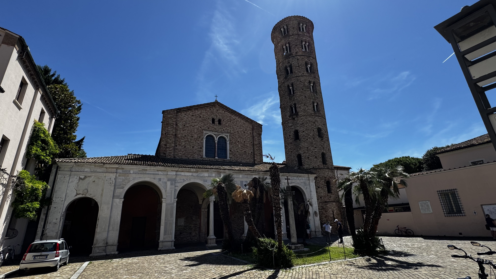
Außenansicht mit dem charakteristischen Rundcampanile aus dem 9./10. Jh. und dem vorgelagerten Atrium-Vorhof. Der Rundturm ist das Wahrzeichen der Kirche.
Sant'Apollinare Nuovo entstand um 490–505 n. Chr. als Palastkirche König Theoderichs des Großen — als arianische Kirche. Als Justinian 540 n. Chr. Ravenna zurückeroberte und 561 n. Chr. die arianischen Besitzungen der Orthodoxie übertrug, wurde die Kirche umgebaut und das Bildprogramm partiell zensiert. Was heute zu sehen ist, trägt die Spuren beider Epochen gleichzeitig.
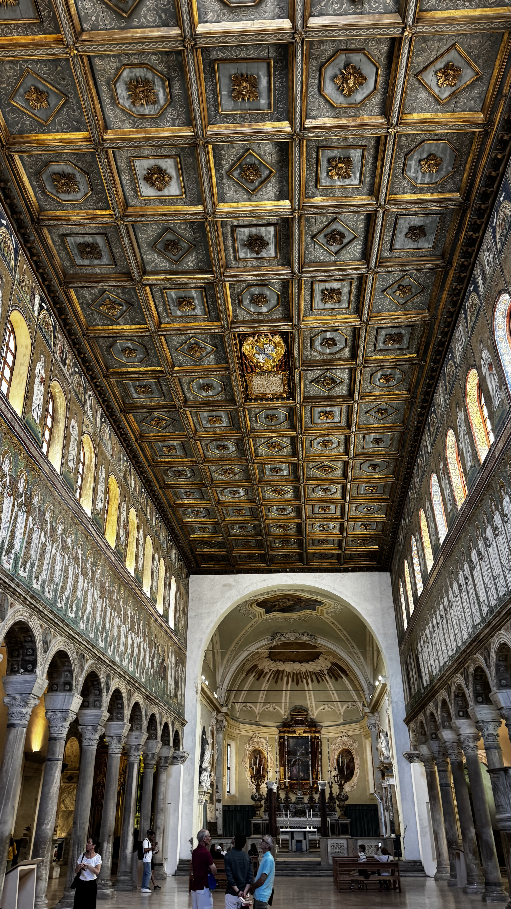
Das Langhaus in voller Länge — die Kassettendecke aus dem 16./17. Jh. überwölbt das 6. Jh. darunter. Beide Mosaikwände ziehen sich durch den gesamten Raum.
Die drei Wandzonen: Die Wände des Langhauses gliedern sich horizontal in drei Zonen, von oben nach unten:
Oberste Zone — Christusszenen, entstanden unter Theoderich, der älteste erhaltene monumentale Christus-Zyklus der Welt. Die beiden Längsseiten zeigen unterschiedliche Themen: Die rechte Wand (Märtyrerseite) zeigt Szenen aus dem öffentlichen Wirken Christi — Wunder, Heilungen, Begegnungen. Die linke Wand (Jungfrauenseite) zeigt die Passionsgeschichte — Einzug in Jerusalem, Abendmahl, Kreuzigung, Auferstehung. Christus erscheint in allen Szenen bartlos und jugendlich — arianische Ikonographie, die Gottes Sohn als Erhöhten zeigt, nicht als allmächtigen Pantokrator.
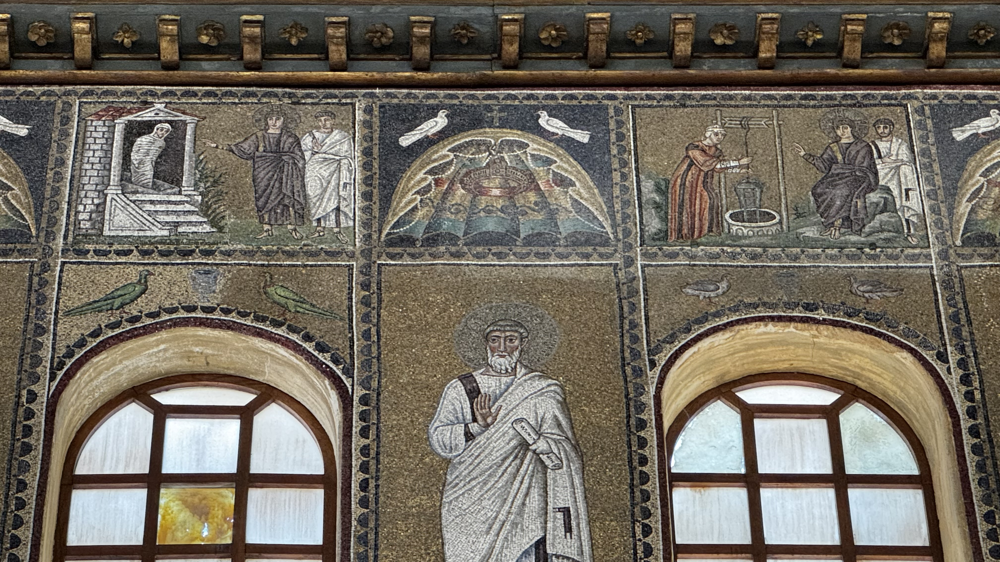
Oberste Wandzone der rechten Seite — mehrere Szenen aus dem Wirken Christi. Links die Auferweckung des Lazarus, Mitte eine Taufszene mit Tauben, rechts Christus und die Samariterin am Brunnen.
Die Auferweckung des Lazarus (Johannes 11) links im Bild — Lazarus tritt noch im Leichentuch aus dem Grabmal, Christus steht davor. Diese Szene war in der frühchristlichen Kunst eines der beliebtesten Motive überhaupt: nicht als bloße Wundergeschichte, sondern als Vorausbild der eigenen Auferstehung. Wer ins Grab schaut und Lazarus heraustreten sieht, soll an die eigene Hoffnung auf Auferstehung erinnert werden. Die Darstellungsformel — Christus mit dem Stab des Wundertäters — ist direkt aus dem hellenistischen Bildvokabular übernommen: Antike Götter und Philosophen wurden mit demselben Attribut dargestellt. Frühchristliche Kunst sprach die Bildsprache die ihre Betrachter kannten.
Mittlere Zone (zwischen Fenstern): stehende Propheten und Apostel, einzeln, frontal, jeder mit Schriftrolle oder Buch.
Untere Zone (die beeindruckendste): die großen Prozessionsmosaiken, nach der byzantinischen Übernahme entstanden.
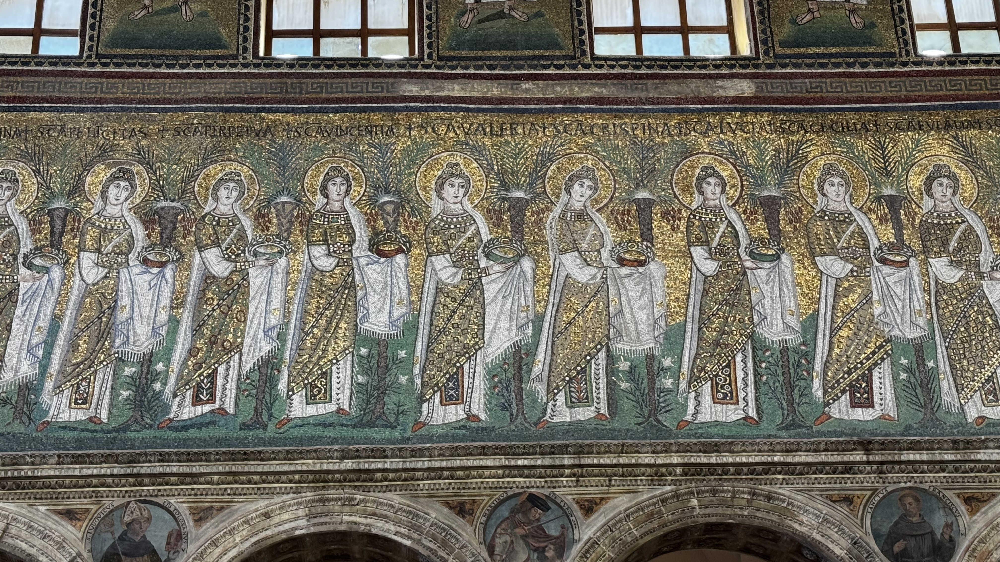
Die Jungfrauenprozession auf der linken Wand — 22 Heilige in Gold, angeführt von den Drei Weisen Königen, ziehen vom Hafen Classis zur Madonna mit Kind.
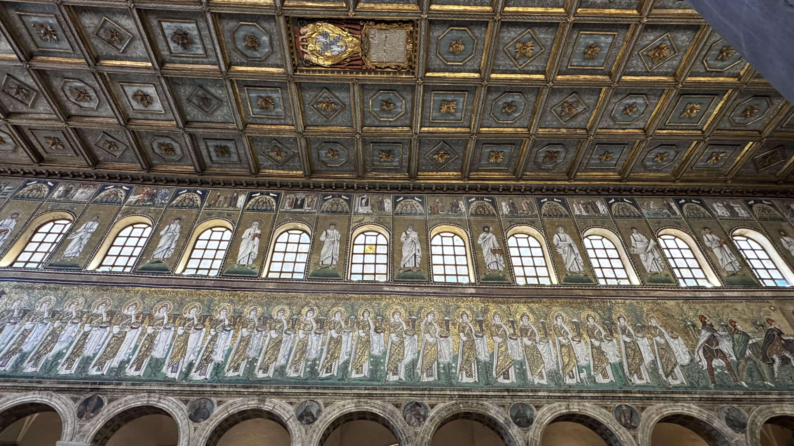
Gesamtperspektive der Jungfrauenprozession mit der Kassettendecke aus dem 16./17. Jh. — das Gold der Mosaiken und das Gold der Decke spannen den Raum von unten bis oben auf.
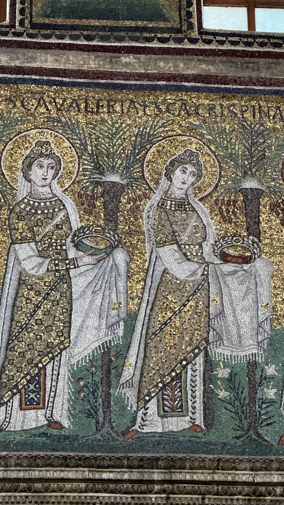
Detail der Jungfrauen — die Inschriften der Heiligennamen gut lesbar, Kranzopfer in den Händen, Palmzweige dahinter. Die Gleichförmigkeit ist Programm: Individualität löst sich auf in der kollektiven Bewegung auf Gott zu.
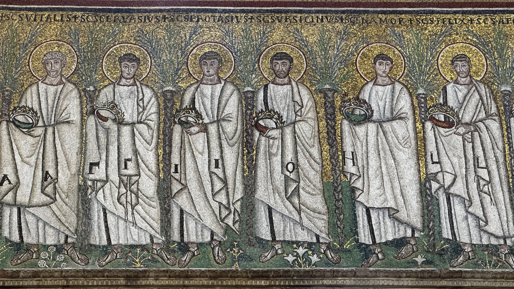
Die männliche Märtyrerprozession auf der rechten Wand — die Namen Vitalis, Gervasius, Protasius lesbar: die Ravennater Stadtheiligen in ihrer eigenen Kirche.
Die beiden Prozessionen sind das Herz des Bildprogramms:
Linke Wand: 22 Jungfrauen, angeführt von den Drei Weisen Königen, ziehen vom Hafen Classis zur Madonna mit Kind. Dies ist vermutlich die älteste bildliche Darstellung der Heiligen Drei Könige mit den Namen Balthasar, Melchior und Caspar.
Rechte Wand: 26 männliche Märtyrer, angeführt vom heiligen Martin, ziehen vom Palast Theoderichs zu einem thronenden Christus.
Die arianische Zensur — sichtbare Geschichte
Die ursprünglichen Mosaiken aus Theoderichs Zeit zeigten seinen Hofstaat in den Wandflächen zwischen den Fenstern. Nach der byzantinischen Übernahme wurden die Figuren entfernt und durch neutrale Vorhänge ersetzt — aber nicht vollständig.
An den Säulen des Palastmosaiks sind noch heute die Hände der ursprünglichen Hofbeamten sichtbar — beim Übermalen übersehen. Politische Zensur aus dem 6. Jahrhundert als bleibende Spur. Eine der faszinierendsten Überreste byzantinischer Bilderzensur überhaupt.
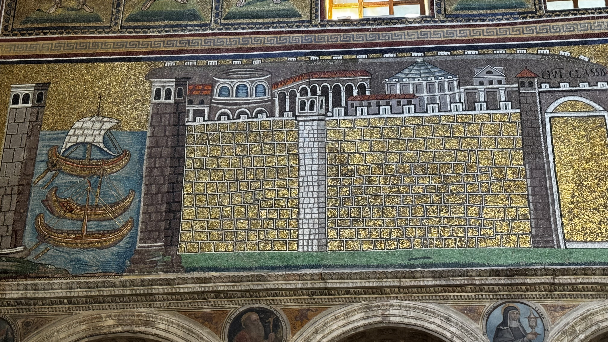
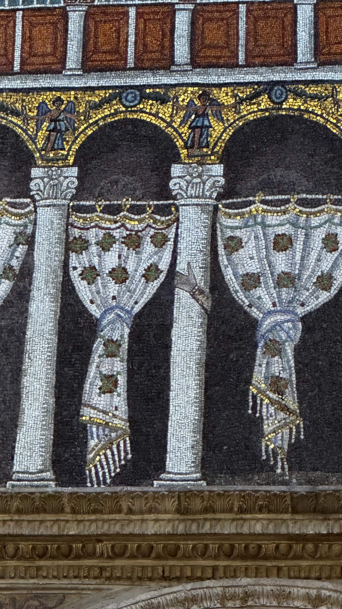
Links: Der Hafen Classis mit Inschrift "CIVE CLASSI" — die einzige zeitgenössische Darstellung des antiken Kriegshafens, der heute 10 km vom Meer entfernt unter Feldern liegt. Rechts: Die Vorhänge die die herausgemeißelten Hofbeamten Theoderichs verdecken — byzantinische Bilderzensur.
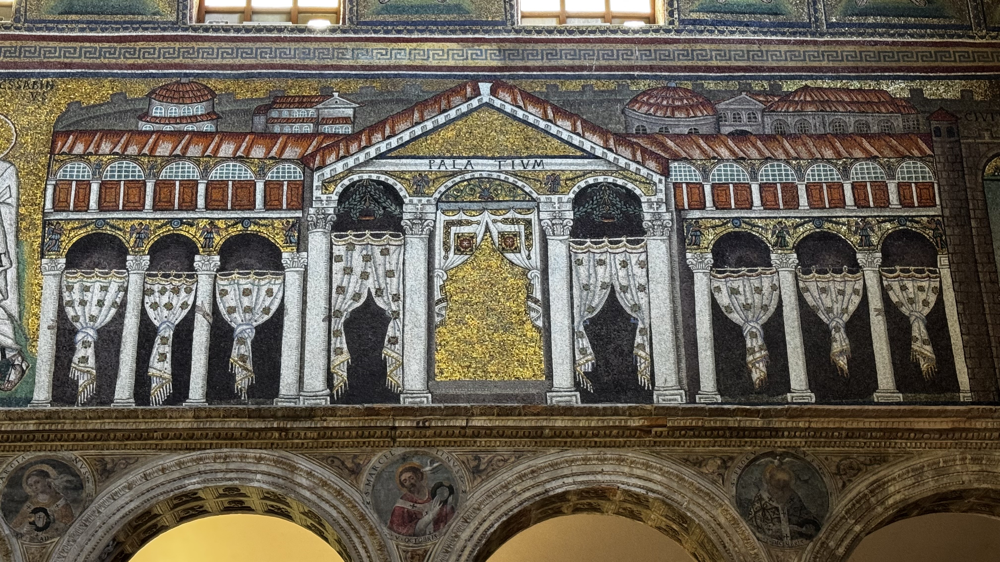
Der Palast Theoderichs mit der Inschrift "PALATIUM" — das historische Dokument des arianischen Ravenna. Die Vorhänge verdecken die Stellen wo einst Theoderichs Hofstaat stand.
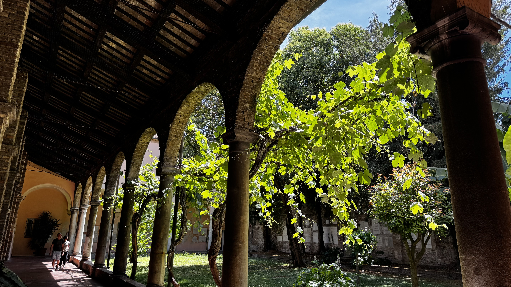
Kreuzgang mit Weinreben im Gegenlicht — der stille Innenhof, durch den die Besucher ein- und ausziehen. Das Grün der Weinreben gegen das Backsteindunkel: ein atmosphärischer Abschluss.
Für den nächsten Besuch
Diese vier Orte konnten diesmal nicht mehr besichtigt werden — teils aus Zeitmangel, teils weil der Tag anders verlief. Sie gehören zu Ravenna und warten auf die nächste Reise. Kurze Einführung zu jedem.
Das älteste Monument Ravennas — ein frühchristliches Baptisterium aus dem 5. Jahrhundert mit einer vollständig mosaikbedeckten Kuppel. Im Zentrum der Kuppel: die Taufe Christi im Jordan, Johannes der Täufer, die Hand Gottes, die Taube des Heiligen Geistes. Darum herum eine Apostelprozession — zwölf Figuren die in der Kuppelrundung auf Christus zuziehen.
Kleines Gebäude, schnell zu erschließen — aber die Kuppelmosaiken gehören zu den besterhaltenen des 5. Jahrhunderts. Im 4-Stätten-Pass bereits enthalten, ein separater Zeitslot ist erforderlich. Zeitslot-Pflicht weil die Kapazität sehr begrenzt ist.
Dante Alighieri starb 1321 in Ravenna — im Exil aus Florenz, von der Stadt aufgenommen als er nirgendwo sonst willkommen war. Er liegt hier begraben, nicht in Florenz. Die Stadt am Arno hat sich Jahrhunderte lang um die Gebeine bemüht — Ravenna verweigerte es beharrlich bis heute.
Ein stiller, kleiner neoklassizistischer Grabbau — keine große Stätte, aber ein bedeutender Ort. Eine Laterne brennt ewiges Licht. Kostenlos, 5 Minuten Fußweg vom Zentrum, öffnet erst um 10:00 Uhr.
Das Grabmal Theoderichs des Großen — erbaut um 520 n. Chr., einzigartiger Rundbau aus riesigen istrischen Kalksteinblöcken, ohne Mörtel gefügt. Die Deckplatte ein einziger Stein, 230 Tonnen schwer — wie er transportiert und gehoben wurde, ist bis heute nicht vollständig geklärt. Ein Rätsel der Bautechnik aus dem 6. Jahrhundert.
Architektonisch völlig anders als alle anderen Ravennater Monumente — keine Mosaiken, kein Backsteinbau, sondern monumentaler Steinbau in gotischer Tradition. Theoderich, der Dietrich von Bern der deutschen Heldensage, liegt hier begraben — obwohl die ursprünglichen Porphyr-Sarkophage verloren sind. 2 km außerhalb des Zentrums, eigene Eintrittskarte.
Die Basilika: Frühchristliche Basilika aus dem 6. Jahrhundert, 549 n. Chr. eingeweiht, auf dem Gelände des antiken Kriegshafens Classis. Von außen schlichter Backsteinbau mit freistehendem Rundcampanile — innen ein Schock: das Apsismosaik zeigt Bischof Apollinaris zwischen zwölf Lämmern auf einer Paradieswiese, darüber die Verklärung Christi als goldenes Kreuz im blauen Sternenhimmel — keine figurative Szene, sondern kosmisches Symbol. Ein anderer Pol zum Gold-und-Macht-Programm von San Vitale: hier Stille, Weite, pastorales Grün.
Der antike Hafen Classis selbst ist oberirdisch nicht mehr zu sehen — das Po-Delta hat das Gelände über Jahrhunderte verschlickt, die Adria ist heute 10 km entfernt. Was einmal 250 Kriegsschiffe fasste, liegt unter Feldern. Die Funde sind im Museo Classis nebenan: Schiffsausrüstung, Amphoren, Architekturteile, das berühmte Mosaico dei Pugili (römische Boxerdarstellung), Multimedia-Rekonstruktionen. Untergebracht in einer umgebauten Zuckerfabrik aus dem frühen 20. Jahrhundert — die Industriearchitektur ist Teil des Konzepts.